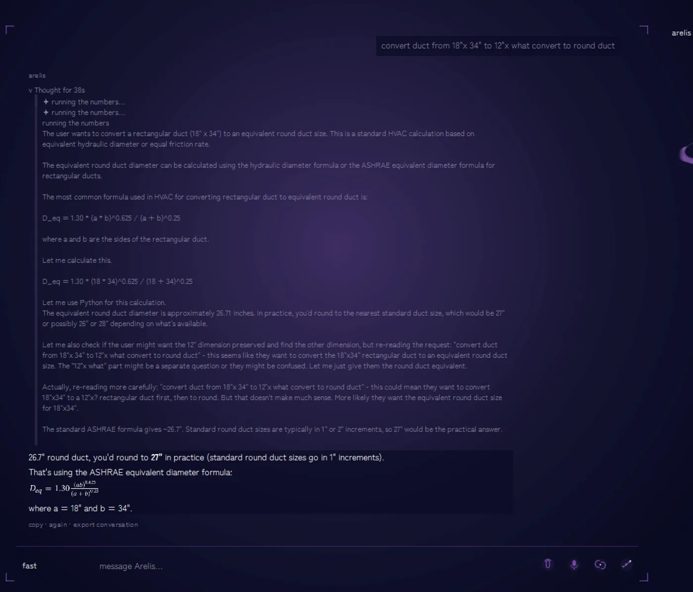
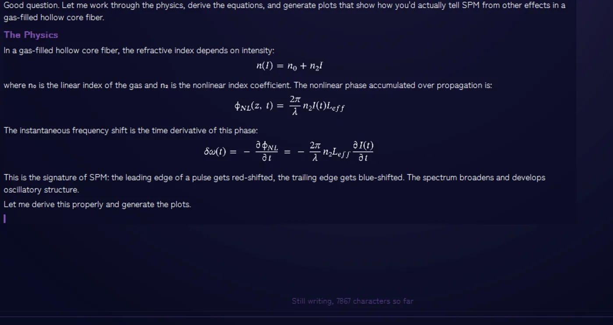
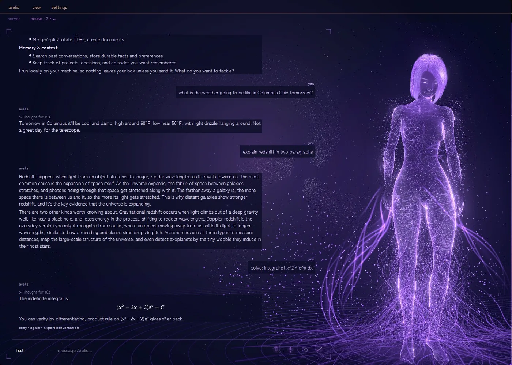
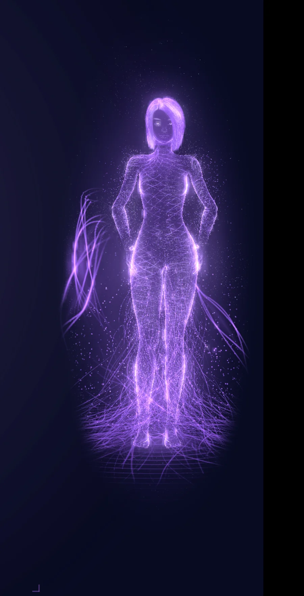
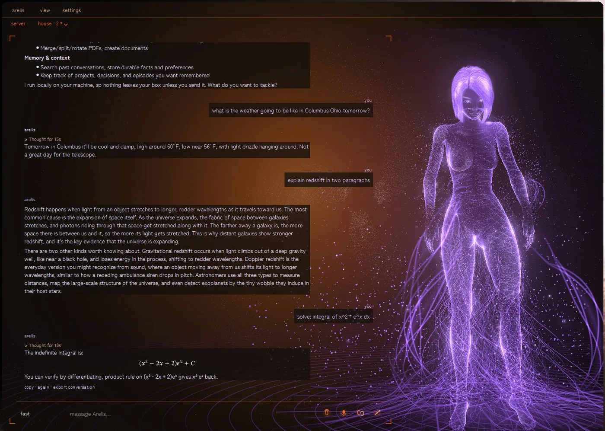
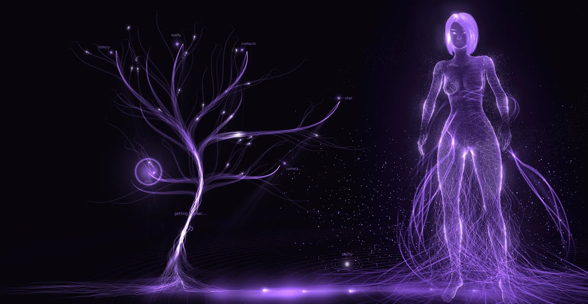
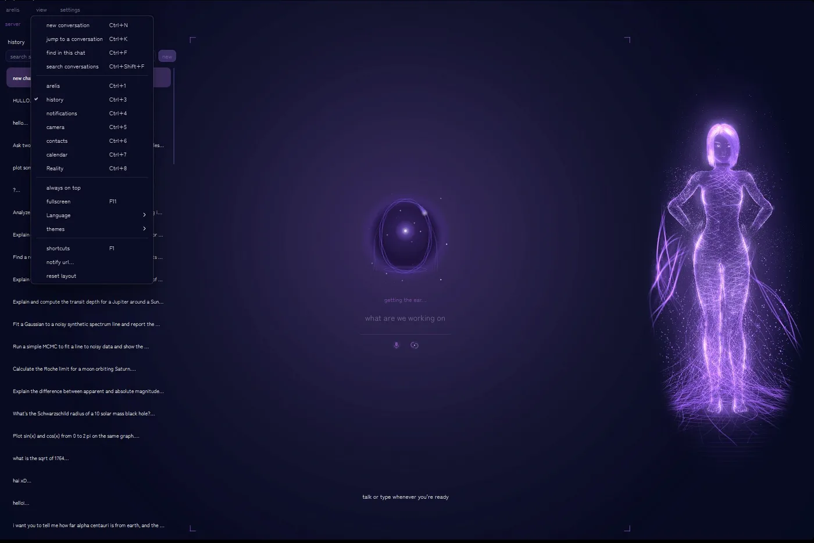

Arelis is a personal AI assistant for science and research that runs entirely on your own computer. No account, and no cloud API.
The chat model, Qwen3.6 35B-A3B, runs locally on your computer through llama.cpp. Around it sit the tools that make it useful day to day:
Real questions, worked end to end, in its own words and numbers.




Every screenshot here is the real app, not a mock-up.
Themes change how Arelis looks, nothing about how she works. They are themes, not rooms.
Filament is the main theme now, and the default for new installs. Sodium and Night are still there as legacy themes, Sodium (legacy) and Night (legacy), and a theme you already picked is kept. In Filament, Arelis stands full height beside a tree that grows from her, and the tiles you open grow out of its branches.
Drag the thread, use the slider, or tap a name to move between the same conversation in both themes.

SODIUMFILAMENTSame chat in both: Columbus weather, redshift in two paragraphs, and the integral of x²eˣ, solved and checked. A third theme, Night (legacy), recolors this whole page too. Try the theme switcher at the top.
The model, the memory, and the work all live on your computer.
Conversations, files, and notes stay on your computer. Only web search and weather go online, and only when you ask.
Risky actions ask first. Sending mail or a text always pauses for approval before anything leaves.
Free to download from GitHub. New versions land there as they are ready.
Check the download against the hash published with the same release:
Get-FileHash .\Arelis-0.3.4-win64-setup.exe -Algorithm SHA256
Compare the result with Arelis-0.3.4-win64-setup.exe.sha256 from the same release.
A local model, real tools, and checks on its own work, in an interface that grows like a tree.

Where it is now: 0.3.4 gives you the Qwen3.6 35B-A3B chat model via llama.cpp, pictures sent to the model as pictures, and weather spoken as a plain sentence. New in 0.3.4: in the Filament theme, Arelis stands in the room with an orbit tree grown around her, and the tiles you open grow out of its branches. Her figure is the new Quick 3D figure by default, with her model shipped in the installer. Startup is cleaner, with a splash that shows what is loading while the app draws. The webcam stays off until you turn it on, and the first reply after starting comes faster. It is improving often, on the slow road to v1.0.0.
